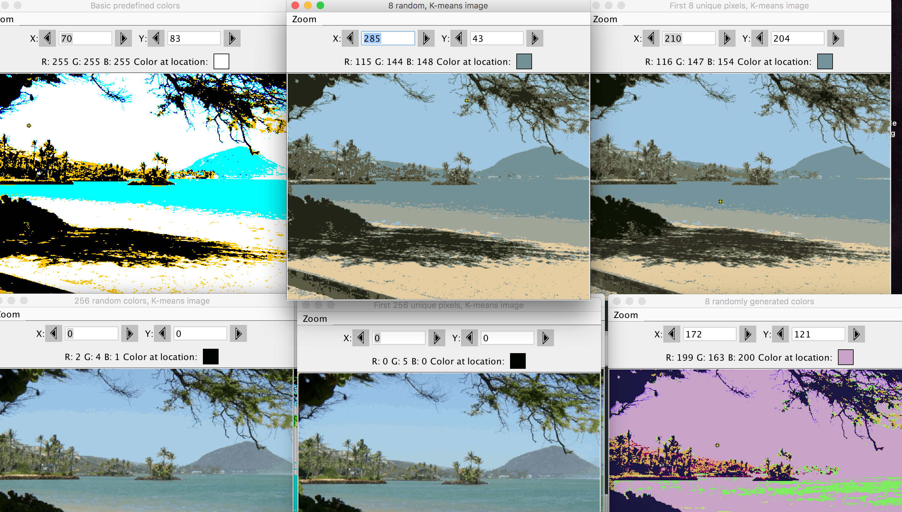
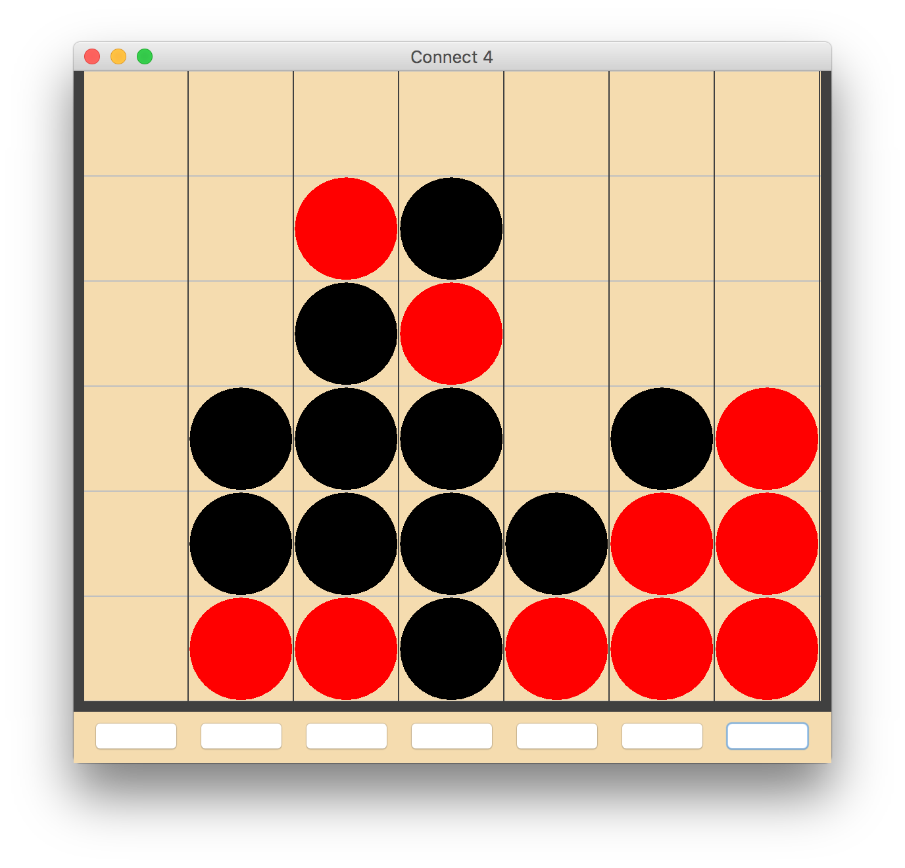

Engineer, Theorist, Urban Explorer
I am a sophomore at Dartmouth College ('19), currently studying computer science and economics. My interests in computer
science involve machine learning and artificial intelligence, web design, and hacking and security. On the
economics side, most of my experience has been in the field of industrial organization. Someday, I hope to be able to
design a compiler that parses actual english language into working code.
In my free time, I enjoy music-related activities. You will often catch me dancing with my hip-hop dance group, Street Soul.
I also enjoy learning new piano
pieces.
I love exploring cities and urban landscapes, and if I'm feeling especially inspired you'll sometimes even catch me sketching
in public!
Selected Snippets
The true method of knowledge is experiment
-William Blake
Following is a brief selection of projects I have done both inside the
classroom and outside. Out of respect for various teachers and employers, information on most of the projects
I have posted here are incomplete and will not divulge complete code or implementation details.
K-Means Clustering

The above image shows the results of a picture whose colors have been reduced to 8 or 256
colors, as shown in the window titles. The algorithm that reduces and maps colors relies on
K-means clustering . This project was written in Java.
CS50 Game Server
This project is a game server, running from a command line, handling varying requests
that are structured by other programs as part of the complete game. Keeps track of a game state, and ends the game upon
command line directive to end, and also prints out the state of the game periodically. Written entirely in C.
Connect4 AI

A simple Connect4 game with an undo feature. The somewhat interesting part of this was the Connect4 bot
, which relies on a game tree search and
alpha-beta pruning
in order to make its decisions. Users are able to set how many moves ahead the
bot looks (i.e. the depth of the tree when searching). Implements a hueristic to calculate score where three-in-a-rows are somewhat valuable
and four-in-a-rows are infinitely valuable. Written in Java.
Huffman Tree Encoding
A java implementation of a Huffman-encoded text file. The image displayed above corresponds
to the US Constitution, compressed via the implemented algorithm.
Y86 Processor
Based off a logisim skeleton of the Y86 CPU, I created an implementation of a basic Y86 CPU
(no pipelining or caching). The user can control the clock cycles and resetting/rebooting the computer. Using software
provided by our textbook's authors, I was able to load my Y86-assembly code into parts of ROM and RAM and simulate a basic
operating system running on a processor!